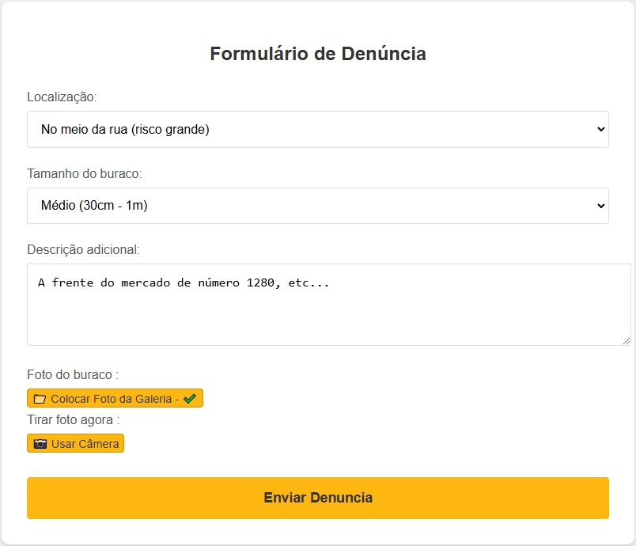

Ajude a melhorar sua cidade!
Denuncie buracos nas ruas e ajude a prefeitura a agir mais rápido.
E como funciona?

Tire uma foto do buraco

Envie a foto através do formulario

A prefeitura será notificada

Com a sua denúncia o buraco será tampado
Um exemplo para ajudar :

Localização: Local aproximada do buraco na rua .
Tamanho: Informação sobre o tamanho aproximado do buraco da denúncia.
Descrição adicional: Adicione mais detalhes, como números de casas ou estabelecimentos perto do buraco
Foto do buraco: Faça upload da imagem do buraco para ajudar na denúncia, essa imagem deve apresentar a localização gps de onde está o buraco, caso não tenha, não será possível terminar a denúncia.